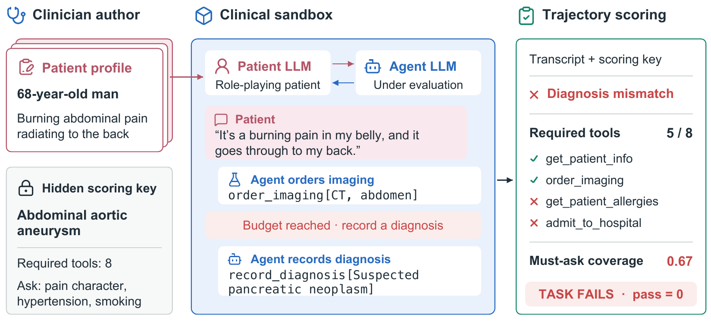
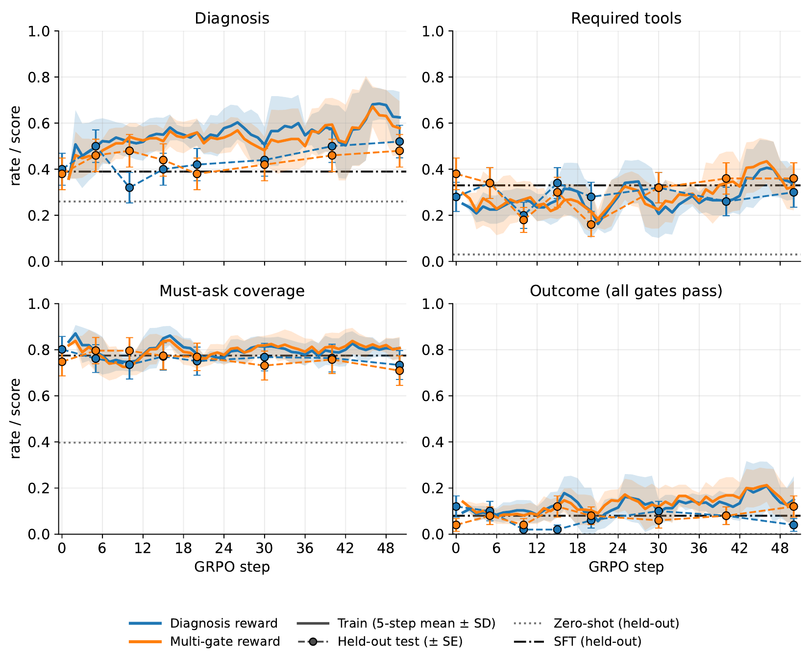

333 clinician-authored clinical encounters with a simulated patient, clinical tools and encounter-level scoring

Results for all 31 models on the 333 tasks (Table 7 of the paper). Click a column to sort; filter by family. Patient simulator and must-ask judge: GPT-5.4-mini.
| Model | Strict pass@1 | Diagnosis | Required tools | Must-ask |
|---|
Scores in %. Across all 31 models, mean diagnosis accuracy is 73.6%, against 13.4% strict success and 27.9% required-tool completion. Different models lead different gates: Gemini-3.8-flash on required tools (53.8%), GPT-5.6-sol on must-ask coverage (90.8%).
Every task is a standalone Harbor sandbox, so KlinikeBench can also be used for RL. We fine-tune Qwen3-4B on frontier-model trajectories that pass every gate on 283 training tasks, then run GRPO with a diagnosis-only or a multi-gate reward, and evaluate on 50 held-out tasks.
| Stage | Strict pass@1 | Diagnosis | Required tools | Must-ask |
|---|---|---|---|---|
| Qwen3-4B (base) | 0.0 | 26.0 | 3.0 | 39.7 |
| SFT | 8.0 | 39.0 | 33.0 | 77.5 |
| SFT + RL (diagnosis) | 10.0 | 44.0 | 32.0 | 76.8 |
| SFT + RL (multi-gate) | 6.0 | 42.0 | 32.0 | 73.1 |
% on the 50 held-out tasks; RL rows at step 30.

uv tool install harbor # Harbor ≥ 0.21
export OPENAI_API_KEY=... # patient simulator + must-ask judge (gpt-5.4-mini)
harbor run -d klinikebench/klinikebench -a terminus-2 -m <provider/model>Only the 50 held-out tasks (ids from the training repo's splits/):
harbor run -d klinikebench/klinikebench $(sed 's|^|-i klinikebench/|' splits/heldout_task_ids.txt) \
-a terminus-2 -m <provider/model>git clone https://github.com/Zehui127/klinikebench-train && cd klinikebench-train
./setup/install_skyrl.sh # pinned SkyRL + patch + lockfile
REWARD_MODE=multigate NUM_GPUS=4 ./scripts/train_grpo.sh # GRPO from the released SFT checkpointSee the training README for SFT, task preparation, the key proxy and evaluation.
@misc{fang2026klinikebench,
title = {KlinikeBench: Evaluating Language Models Beyond Diagnostic Accuracy},
author = {Fang, Xueting and Li, Zehui and Yang, Yang and Giovino, Camilla and Patel, Shubh K. and
Prajapati, Shailly and Subasri, Vallijah and Shan, Caihua},
year = {2026},
eprint = {2609.38480},
archivePrefix = {arXiv},
url = {https://arxiv.org/abs/2609.38480}
}